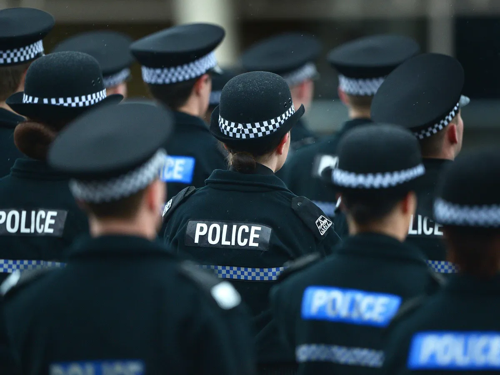
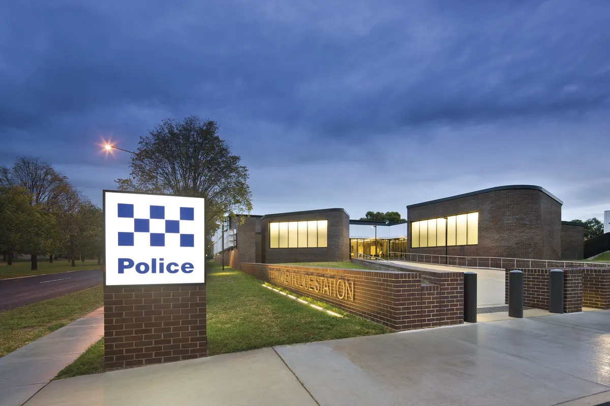
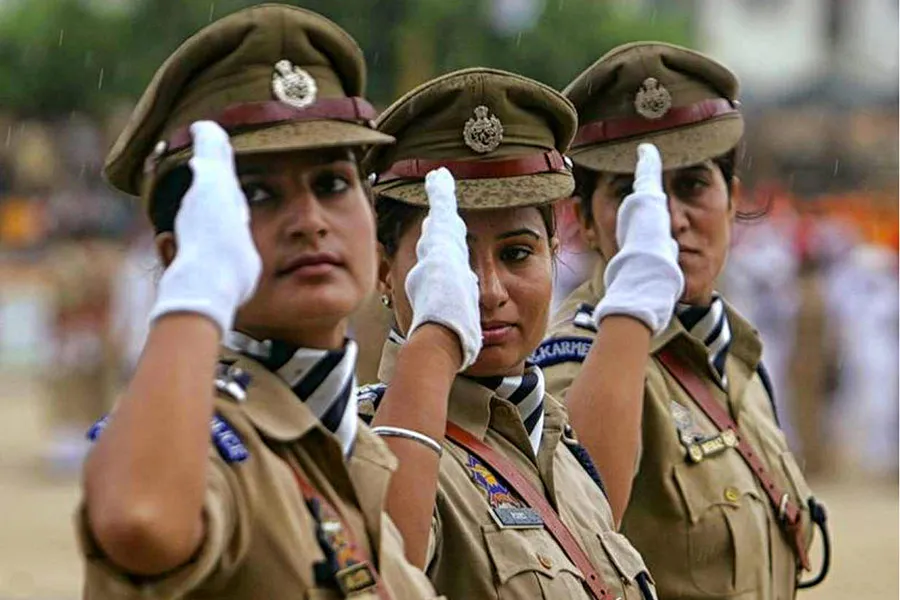
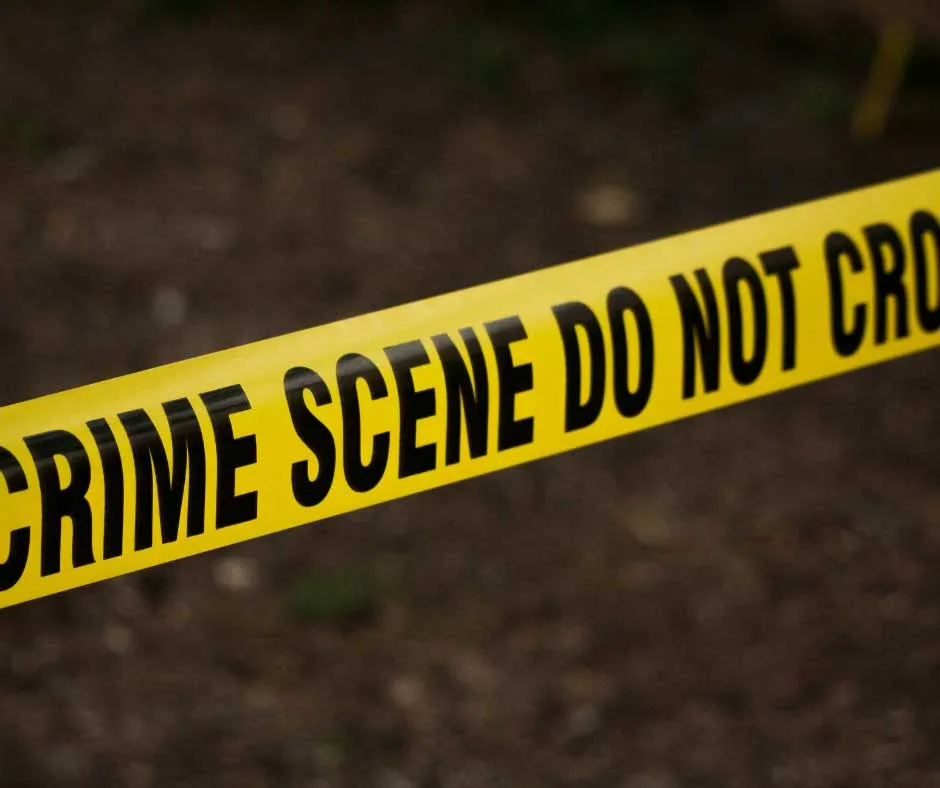
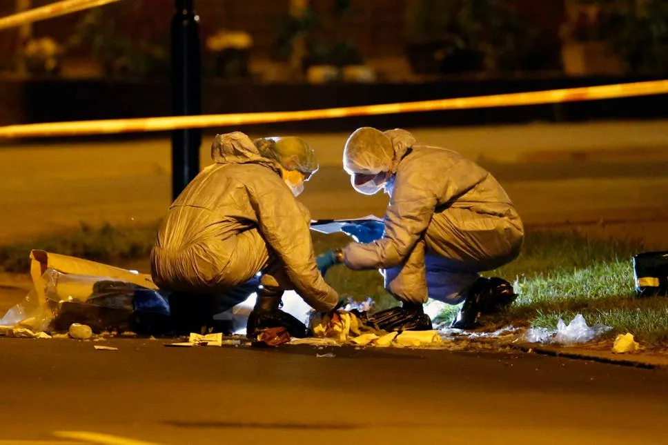
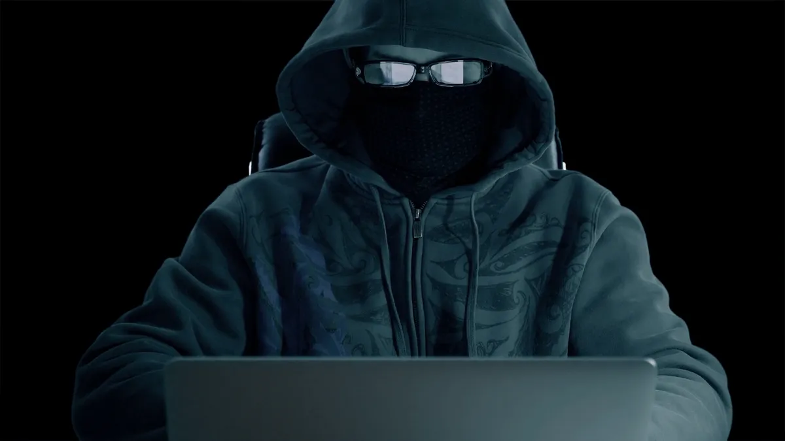
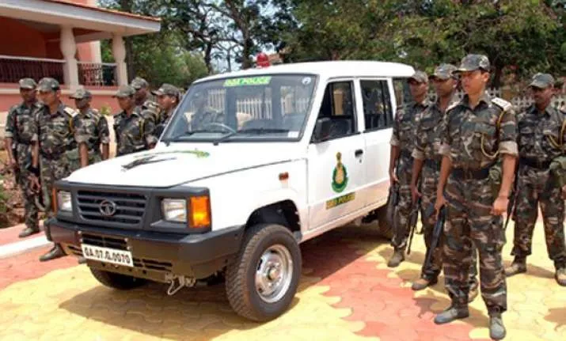

The Goa Police as an independent organisation was born in April 1946 with the establishment of Policia do Estado da India (PEI) Police of India, through a decree of the Portuguese regime which ruled Goa until 1961. Until then, all policing functions including the maintenance of law and order were being carried out by the Portuguese military. The PEI was responsible for carrying out the functions of vigilance and maintenance of general order and comprised the following branches: public security, judicial police, internal and external traffic police, administrative & municipal police and civil identifications. Two years later, appropriate rules governing the police were framed on the lines of the legislation then prevailing in Portugal. In the two-year period of the rules being framed,the PEI functioned under the regulations of O Corpo de Policia e Fiscalizacao da India (CPFI) – The Corps of Police and Inspection Services of India that had been set up in 1924 to function as the policing arm of the military. The police services had been placed under the direct supervision of the CPFI command. The PEI was organized into five territorial divisions for efficient performance with each division headed by a commissioner who reported to the commander of the PEI. The PEI thus developed into a supreme law and order establishment, with even officials and agents of organizations such as Customs having to inform it about violations that came to their notice. Not only did the PEI have powers to conduct search and seizure operations, it could also frame proceedings for prosecution and file cases for extraditing criminals. Punishment and rewards were used to enhance efficiency of the police force. Punishment included verbal admonishment, censure, fines, detention upto 130 days and imprisonment for upto 30 days, reversion, compulsory retirement and dismissal. If the punishment was stiff, the rewards were generous: exemption from service upto 12 days, leave with salary upto 30 days and pecuniary benefits upto 30 days' pay. The strength of the PEI continued to grow year after year, keeping in mind the rising need of maintaining law and order in a enlarging society. But the main reason for the growth in strength was the Portuguese regime's need to contain the increasing surge of freedom movement in Goa. Much of the PEI's time would be consumed in trying to contain agitations and other forms of freedom movement, that received a boost by Dr Ram Manohar Lohia's civil disobedience movement launched in 1946 – the very same year of PEI's establishment. In time to come, the PEI, which had gained respect for efficient policing of the territory, began to court notoriety for its brutal repression of the freedom movement.
      With Liberation and the departure of the Portuguese, began a long and exhaustive overhaul of the Goa Police. Work to reorganize the police department on the lines of what existed in the rest of the country, began in right earnest. N R Nagu took over as the first Inspector General of Police (IGP) of free Goa and a host of other appointments were made just a day after liberation. Services of those officials serving the PEI were protected and they were suitably accommodated in Goa Police. Those who wished to be relieved were allowed to do so with effect from February 1, 1962. However, the ranks and organizational structure of the PEI was retained for a longer period before being transformed in keeping with what existed in the country. Officers taken on deputation had meanwhile begun to introduce policing systems based on Indian laws and procedures. But it was not until 1966 that major changes began to be made and felt when the police force was reorganized following recommendations made by B Shetty, Additional DGP in CBI. Shetty forwarded these recommendations based on a study conducted by him in February-March 1965 on the prevailing set-up. He discovered that the system had several gaping holes and that the police personnel were still looked at with suspicion by the common man, unable to forget their Portuguese links. His recommendations laid the foundation for the emergence of the Goa Police force as we know today. The Goa Police force was headed by an Inspector General of Police until 2nd Feb 1999. Over the years Goa Police has undergone tremendous changes not just in their functioning but also in image build-up. It has constantly worked to be more and more people-friendly, one that the law-abiding citizen need not fear.